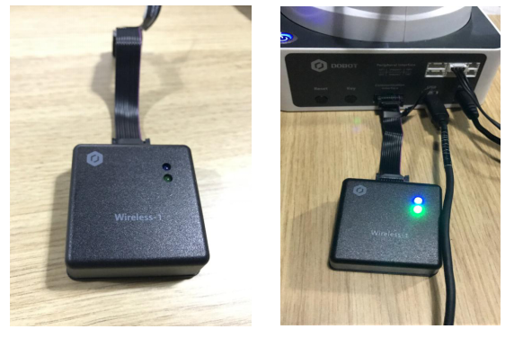
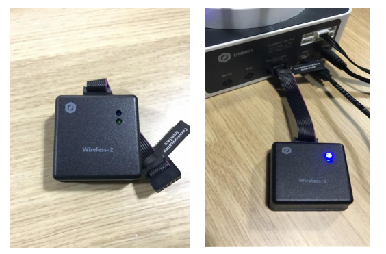
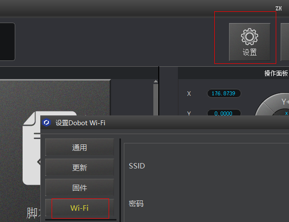
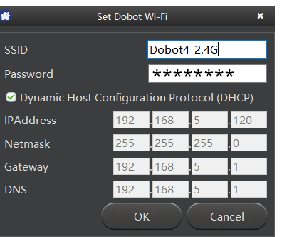
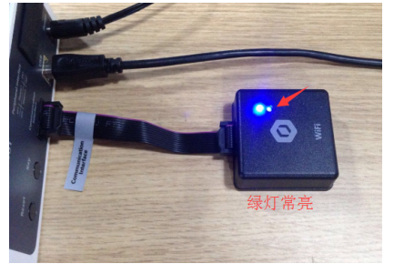
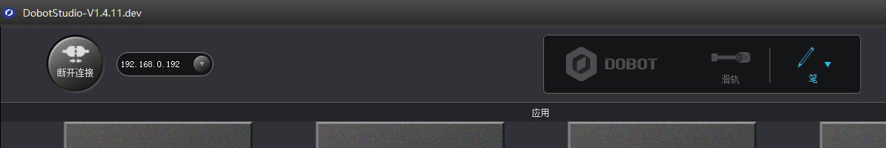

通信套件
蓝牙套件包含蓝牙模块，安装如下所示：

- 安装蓝牙模块后，开启Dobot主电源，当听到三声响声后表示蓝牙模块初始化完毕，此时蓝牙模块的蓝灯常亮，绿灯闪烁。
- 在手机（IOS）设置里打开蓝牙，再打开Dobot App即可连接上机械臂。
- Dobot App官网下载地址：http://cn.dobot.cc/download-center/dobot-magician.html
WIFI套件包含WIFI模块，将其接入Dobot扩展口，然后开启电源，上电后模块会响两声，并且蓝灯亮：

设置WIFI模块：
首次使用前，需要使用USB 线进行WIFI模块设置，完成后即可实现WIFI模块的独立使用，不再需要连接USB线。
1.打开DobotStudio，点击连接按钮通过COM口连接机械臂，选择 设置->WIFI选项，开启WIFI参数设置界面
++
2.输入要接入的无线局域网相关参数

i.在“SSID”输入框填入WIFI名字
ii.在“Password”输入框填入WIFI密码
iii.使用DHCP功能，请勾选单选框
iv.不使用DHCP功能，请填写“IPAddress”、“Netmask”、“Gateway”、“DNS”等参数
(一般情况下，直接使用DHCP功能并点击确定OK按钮完成设置。等待若干秒，Dobot WIFI无线模块的绿色信号灯常亮，表示Dobot已经接入局域网)

3.此时在DobotStudio主界面可以看到自动搜索出来的设备地址，如下图:

4.选择该地址，点击连接，成功后即可通过WIFI控制机械臂。并且后续插入WIFI模块即可通过该地址连接到机械臂，无需使用USB线